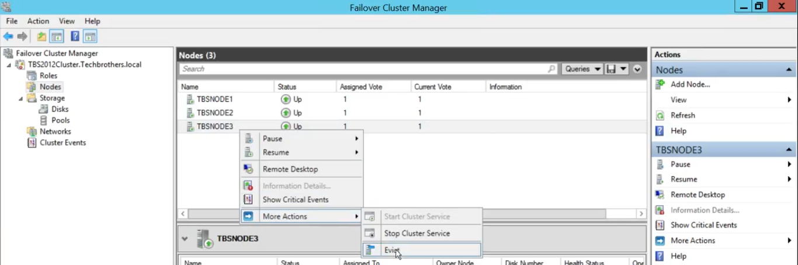

Adding a node to a Cluster
- Open Failover Cluster Manager. Right-click on Nodes, and select Add Node.
- Select Servers – Select the server to add in the cluster.
- Validation Warning – Choose whether to run the Configuration Validation Test or not. When choosing to run the test it will open a separate wizard for it. After the validation, choose No in this page to continue.
- Finish the wizard.
Evicting a node from a cluster
- Check first if no resources are running under the node that will be evicted. Then select the node and evict it. 
- Validate the nodes.
Common Issues
Cluster validation: "The servers are not all in the same organizational unit"
Problem: ..among the warnings that the cluster validation wizard points out is this one in the Active Directory section: The servers are not all in the same organizational unit..I don't know is whether this is a problem for the purposes of clustering. Is it perfectly fine to set up the cluster this way, or should I have the client make some AD changes?
Solution: The implications are that there is the potential for group policy, or other processes that rely on the OU structure in AD, to make non-uniform changes to cluster members. Best practices are to have them in the same OU, and it only takes a moment to correct, so ask your client to move them into the same OU. Also, Microsoft also supports Failover Clusters only when the cluster passes all validation tests.